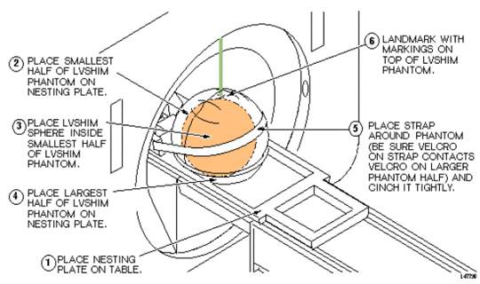
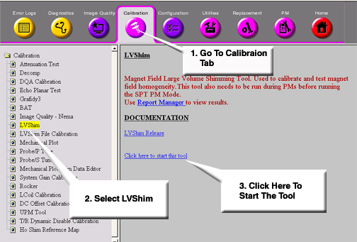

Operating Documentation
Direction 5440001-3, Rev# 6
Signa HDxt Service Methods
Module Version 2.0, Version Date 6/23/09
Operating Documentation |
| Required Persons | Preliminary Reqs | Procedure | Finalization |
|---|---|---|---|
| 1 | Not Applicable | Up to 6 | Not Applicable |
The goal of Main LVshim is to use S/C or resistive shim coils to achieve the Main LVshim specifications at 45-cm DSV (40-cm DSV for CRM Body Coil). LVshim and Gradient Shim Specifications.
| NOTE: | After ramping the magnet, the cryocooler coldhead must be turned off for 10 minutes before installing shim currents. This is due to the magnetic flux buildup within a superconducting shield around the coldhead sleeve during magnet ramping. |
| NOTE: | The helium vessel pressure must be at 4.0 psi ± 0.1 psi. Failure to scan at the proper pressure will result in long term Z2 drift. Refer to LCC Vessel Pressure Control for methods to increase vessel pressure during shimming. |
| Item | Qty | Effectivity | Part# | Manufacturer | |
|---|---|---|---|---|---|
| Nesting Plate Assembly | 1 | - | 2125247 | - | |
No general safety information.
| Condition | Reference | Effectivity |
|---|---|---|
- | - |
Remove the Head Coil and any phantoms from the cradle.
Setup and align the LVShim Phantom per Illustration 1.
Illustration 1: Aligning LVShim Phantom on Patient Table

Press <Advance to Scan>.
| NOTE: | To reduce noise, prior to scanning, make sure the screen room door and any other screen room opening is closed tight. |
At the Host Computer, select the scan icon in the desktop control panel and set up LVshim scan as shown in LVShim Scan Protocol.
Click [Autoprescan]. Make sure TG is between 130 and 160. Also Make sure X, Y and Z Gradshims are 0. If autoprescan fails, attempt manual prescan in Step 3. Otherwise, skip to Step 4.
Click [Manual Prescan].
While in the [Center Freq. Fine (CFH)] mode, verify that the frequency peak is centered in the display. Center frequency peak as necessary. After locating the best signal, open the Frequency menu at the top of Manual Prescan window and select [Save Frequency] to save the new center frequency.
Click [Transmit Gain (TG)], open the Markers menu at the top of the Manual Prescan and select [Horizontal Hairline]. Adjust Transmit Gain for the highest value. TG should be between 130 to 160.
| NOTE: | The TG needs to be adjusted correctly after performing Auto Prescan. Auto Prescan sets the TG for this phantom too high which results in the RF being overdriven and will produce NaN (Not a Number) in the LVshim analysis. Typically the TG will maximize at approximately 20 counts less than the Auto Prescan setting when adjusted in Manual Prescan. |
Click [Scan TR (R1/R2)]. Verify that R1 and R2 are not over ranged. Adjust R1 and R2 for approximately 50%.
Click [Done] to exit Manual Prescan.
When finished with prescan, click [Scan].
| NOTE: | The annotation on the LVshim images is not correct and does not change. The scan plane is driven by the LVshim PSD, not through scan prescription. Therefore, the software that is responsible for the image annotation doesn't know about the plane changes and keeps the annotation at the first plane. The images are in the correct plane and orientation; however, the annotation does not reflect this. |
At the Host Computer, go to the Service Desktop and open the Service Browser if it's not already running.
Start the LVShim tool from the Service Browser as shown in Illustration 2.
Illustration 2: Starting LVShim Tool

For TwinSpeed, highlight [WHOLE] and click [OK].
The menu as shown in Illustration 3 should appear in a C-Shell window once the LVShim tool has been started:
Illustration 3: LVShim Main Menu

Change the following parts to calculate the next set of currents while performing Main LVShim:
Shim Type should be set to the supercon shim set appropriate for the magnet type. Type 1<Enter> until the correct set is displayed.
Image Data should show the Exam, Series and the first Image number of the previously scanned LV Shim series. Type 2<Enter> and change if necessary.
Operation Mode should be set to Service. Type 3<Enter> until this is listed correctly.
Display Mag and Phase Diff Images should be set to No. Type 4<Enter> until this is listed correctly.
The calibration file should list the correct configuration file to use. Type 5<Enter> to view possible filed. You can view detailed information on these files in the LV Shim Software document.
The existing current in each coil should match the currents set in each coil from the previous iteration (or the initial currents). Type 6<Enter> and modify the currents if necessary.
Once the LV Shim Analysis tool is setup correctly via Step 5, type 0<Enter> to run the analysis.
If image phase wrap was detected, the following message appears: “Excessive phase wrapping….Please re-scan at Wider Bandwidth or smaller test diameter”. If this occurs, return to Main LVShim Scan Prescription and re-scan and a greater bandwidth.
A output should now be seen, an example is shown in Illustration 4 . Bandwidth, Exam, Series and Image # will match the LV Shim series under analysis.
Illustration 4: Example Output

If “NaN” is displayed in the Harmonic Coefficient data, you should return to Main LVShim Scan Prescription and rescan. Make sure the TG value is between 130 and 160.
Enter Comments as desired. Once comments are entered, the following is displayed (# of coils/options vary depending on magnet type). (see Illustration 5)
Illustration 5: Select the Number of Coils

Select coil set that you would like to use to improve the magnets homogeneity. Refer to the correct magnet documentation for details on coil sets to use. Enter in the appropriate value.
Once the shim current set is entered, then each coil will be presented with Existing, Delta and New currents. See below for an example when the full 18 coils were chosen. (see Illustration 6)
Illustration 6: Shim Current Settings

Record this data in the appropriate Data Sheet for your magnet.
Compare this data to the LV Shim Specifications given in the tool. Make sure to verify the correct bandwidth was used in the initial scan. If the shim is within spec, you can reject these currents and exit the tool.
You can modify or accept the new currents if you are outside of spec. These currents are saved in LV Shim as the actual currents. Use the magnet documentation on directions to burn in these currents as it varies between magnet type.
If you accepted the new currents, type Y<Enter> once the new currents have been burned into the coil, update the Data Sheets.
Return to Main LVShim Scan Prescription and use the suggested bandwidth. Continue iterating Main LV Shim until the magnet meets specification.
| NOTE: | If you have an S-IV or S-X magnet that was originally passive-shimmed on a C6 volume, and you cannot achieve the Main LVShim specifications, you may need to redo passive shimming on a 45cm spherical volume. However, if you do not redo passive shimming, your shim quality will be no worse than it was before LVShim (and probably a little better, especially on large FOV Images). It will meet the Gradient LVShim specifications (to prove it is at least as good as Quick Shim). But, it may not meet the Main LVShim specifications (especially the harmonic coefficients). You can wait until the passive shim option is available for LVShim tool or you can perform passive shim on a 45 cm spherical volume using the plotting fixture. Refer to the appropriate magnet service manual (Direction 15345 for S-IV and Direction 15537 for S-X for the procedure to passive shim with the plotting fixture. |
Remove phantoms and equipment used during LVShim.
Proceed to Gradient Shim.